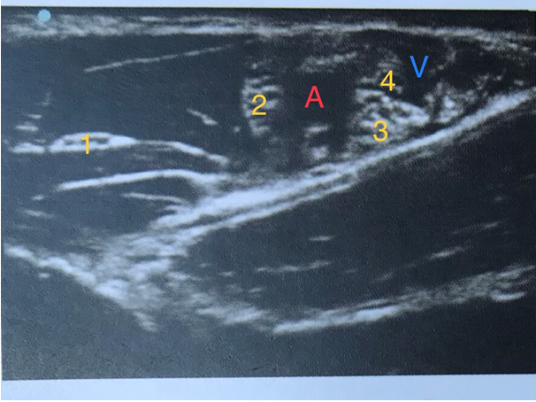

Décrivez les grands principes d'un programme de réhabilitation améliorée après chirurgie digestive dans les périodes per et postopératoire.
Question 2
Quels sont les grands axes de la prévention de l'hyperalgésie postopératoire ?
Question 3
Quels sont les différents traitements préventifs d'une hypotension au cours d'une césarienne programmée sous rachianesthésie ?
Question 4
Décrire les éléments diagnostiques d'état de mort encéphalique.
Question 5
Décrire la prise en charge thérapeutique d'une hyperkaliémie sévère.
Question 6
Rédigez l'ordonnance analgésique de sortie à domicile après amygdalectomie ambulatoire chez un enfant âgé de 6 ans de 20 kg.
Question 7
Intoxication aux anesthésiques locaux : signes cliniques et prise en charge.
Question 8
Critères d'éligibilité à la chirurgie ambulatoire.
Question 9
Objectifs transfusionnels lors d'un choc hémorragique traumatique hors traumatisme crânien et pathologie coronarienne.
Question 10
Prise en charge après une céphalée après une brèche secondaire à une analgésie péridurale.
Question 11
Critères de la classification d'un SDRA (critères de Berlin).
Question 12
Traitement du choc anaphylactique.
Question 13
Critères de ventilation au masque difficile.
Question 14
Citer 5 causes d'une pancréatite aiguë.
Question 15
Complications des hémorragies sous-arachnoïdiennes post-anévrysmales.
Question 16
Choix de la molécule, de la concentration et du volume d'anesthésique local lors d'une anesthésie caudale d'un enfant de 10 kg.
Question 17
Complications potentielles après chirurgie de la thyroïde.
Question 18

Décrivez les différents éléments anatomiques observés lors d'un bloc axillaire échoguidé (numérotés de 1 à 4).
Question 19
Décrivez les 5 diagnostics principaux échocardiographiques à évoquer lors d'un état de choc.
🚀 Rejoignez notre formation complète
Cette annale fait partie de notre programme de formation. Découvrez notre préparation intensive avec corrections détaillées pour maximiser vos chances de réussite aux EVC.